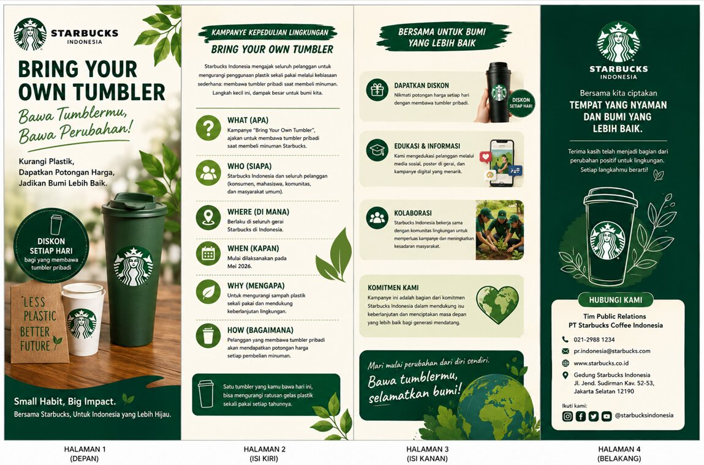

Galeri Kegiatan
Brosur Kampanye

Produk Starbucks

Bawa tumblermu, bawa perubahan. Bersama Starbucks Indonesia mari kurangi penggunaan plastik sekali pakai.
Pelajari KampanyeStarbucks Coffee Indonesia merupakan bagian dari jaringan Starbucks global yang menghadirkan kopi berkualitas tinggi serta pengalaman terbaik bagi pelanggan. Starbucks tidak hanya menjadi tempat menikmati kopi, tetapi juga ruang untuk berkumpul, bekerja, dan membangun komunitas.
Starbucks didirikan pada tahun 1971 di Seattle, Amerika Serikat. Starbucks Indonesia membuka gerai pertamanya pada tahun 2002 di Plaza Indonesia, Jakarta dan terus berkembang di berbagai kota besar di Indonesia.
Menjadi perusahaan kopi terdepan yang menginspirasi dan membangun hubungan antar manusia melalui pengalaman terbaik dalam setiap cangkir kopi.
CEO → Regional Director → Area Manager → Store Manager → Supervisor → Barista
Gerai Dunia
Negara
Pengguna Tumbler
Pengurangan Plastik
Kampanye membawa tumbler pribadi saat membeli minuman Starbucks.
Seluruh pelanggan Starbucks Indonesia.
Berlaku di seluruh gerai Starbucks Indonesia.
Dimulai tahun 2026 dan berlangsung berkelanjutan.
Mengurangi penggunaan plastik sekali pakai dan menjaga lingkungan.
Pelanggan membawa tumbler sendiri dan mendapatkan potongan harga.
Starbucks Indonesia mengajak pelanggan menggunakan tumbler pribadi sebagai bagian dari komitmen keberlanjutan perusahaan.
Starbucks terus mengurangi penggunaan plastik sekali pakai melalui berbagai program ramah lingkungan.
Perusahaan bekerja sama dengan komunitas lingkungan untuk meningkatkan kesadaran masyarakat.

Perusahaan : Starbucks Coffee Indonesia
Email : pr.indonesia@starbucks.com
Telepon : (021) 2988 1234
Website : www.starbucks.co.id
Alamat : Jl. Jend. Sudirman Kav. 52-53, Jakarta Selatan